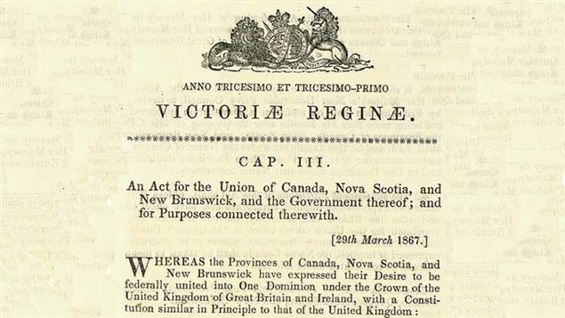
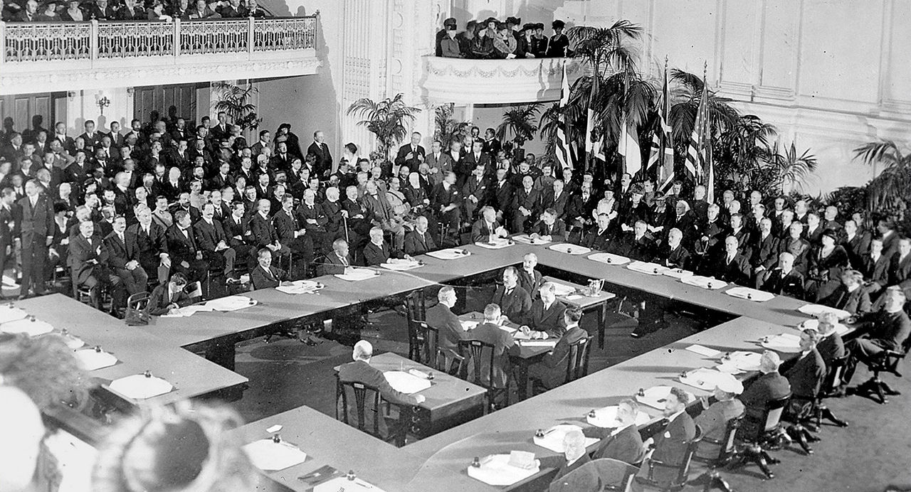
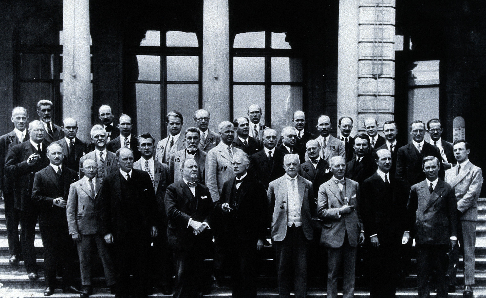
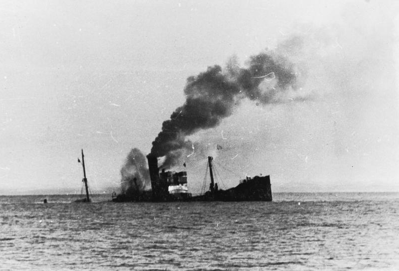
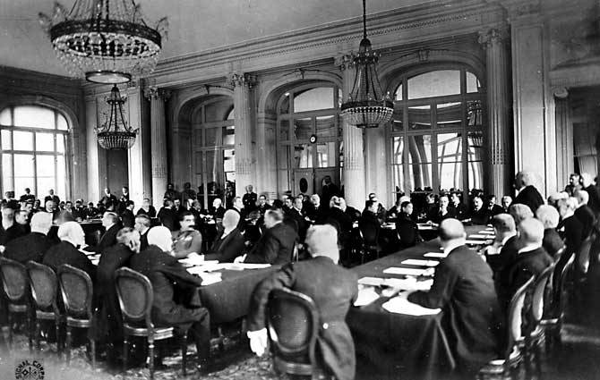
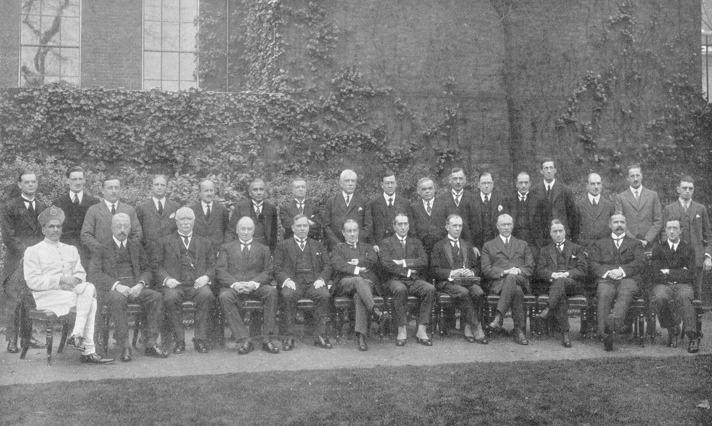
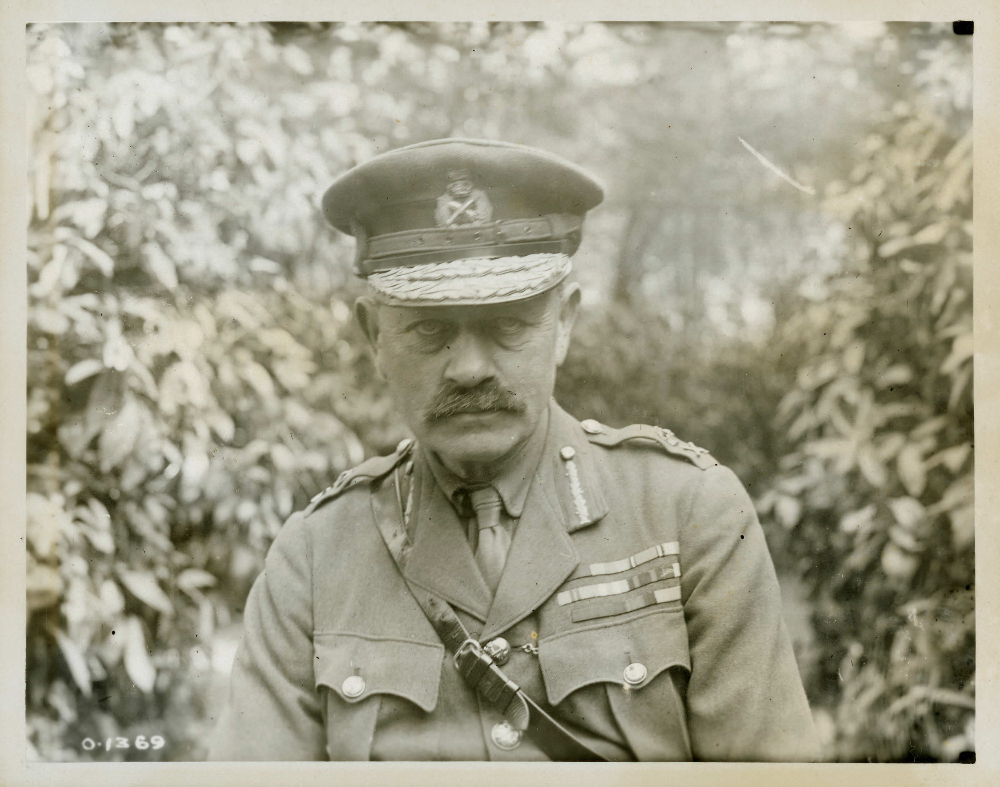
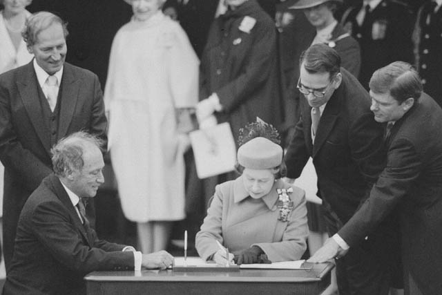
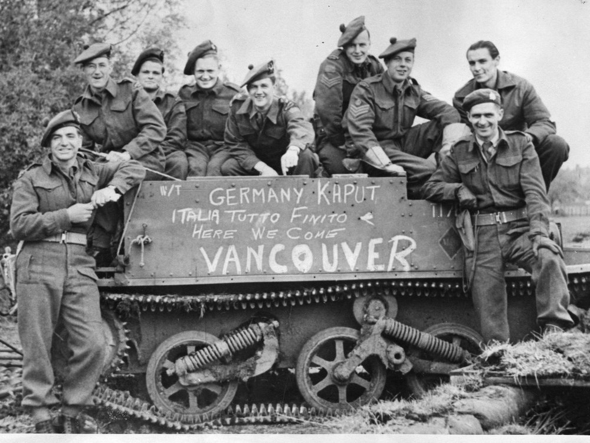
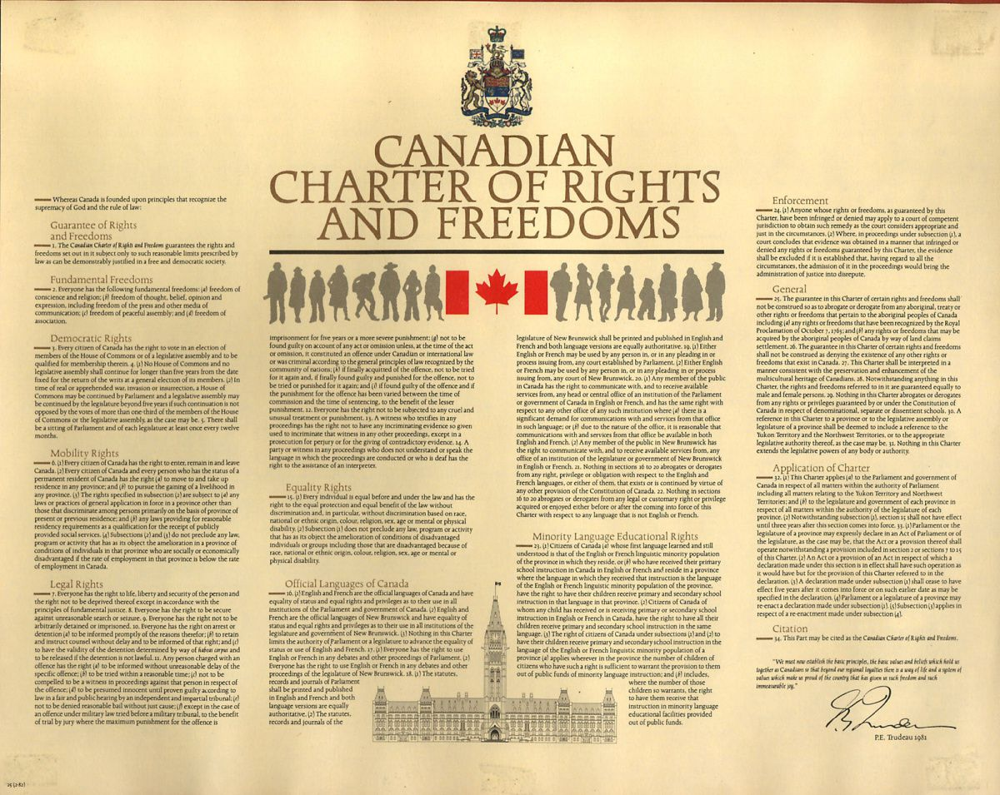

British North America Act
July 1, 1867 - Canada asks the King to unite the colonies as a separate country called Canada. Britain creates the British North America Act, which was the first step to create Canada.

Battle of Vimy Ridge
April 9, 1917 - The first battle that Canada was a part of as an independent country, a battle in which we were victorious. It was the first time we were united from coast to coast for a common goal. “In those few minutes,” said Canadian Brigadier-General A.E. Ross of the victory, “I witnessed the birth of a nation.”

Treaty of Versailles
June 28, 1919 - This treaty was created after World War I to settle the war and enforce new rules on Germany. Canada played a big part in negotiating the deals between countries and it was the first time we signed a treaty as an independent nation.

League of Nations
January 10, 1920 - Canada helped found the League of Nations, which was created to keep the peace after World War I. Canada joins as a separate country rather than a colony of Britain which showcased our negotiation skills and strengthened our international bonds.

Chanak Crisis
1922 - Britain assumed that Canada would join on their side in a conflict against Turkey. Instead Canada’s Prime Minister said they would think about it, and by the time they came to a decision, the conflict was over.

Halibut Treaty
1923 - This was the first Canadian treaty that was independently negotiated without Britain helping us. The treaty was about our fishing rights with the United States.

Imperial Conference
1926 - A conference between the Prime Ministers of the Dominions of the British Empire. The conference stated that all dominions were equal to in power and just as autonomous as Britain.

King-Byng Crisis
1926 - Prime Minister Mackenzie King challenged Britain over their influence on Canada’s politics. PM King stated that it was undemocratic that a Governor General would challenge the wishes of a Prime Minister. This was the last time a Governor General challenged a Prime Minister.

The Statute of Westminster
December 11, 1931 - Before this Statute, Canada was the only country that had to ask Britain for permission to change its Constitution. This Statute was a British law that clarified the powers of the Canadian Parliament and gave it full legal freedom.

Canada Declares War
September 1939 - Canada independently declares war on Germany in WWII. This was the first time that Canada went into war as an independent nation.
Canada's New Flag
February 15, 1965 - Queen Elizabeth declared that there would be a new flag raised over Parliament Hill. This was the first time Canada used the maple leaf flag rather than one with British roots.
